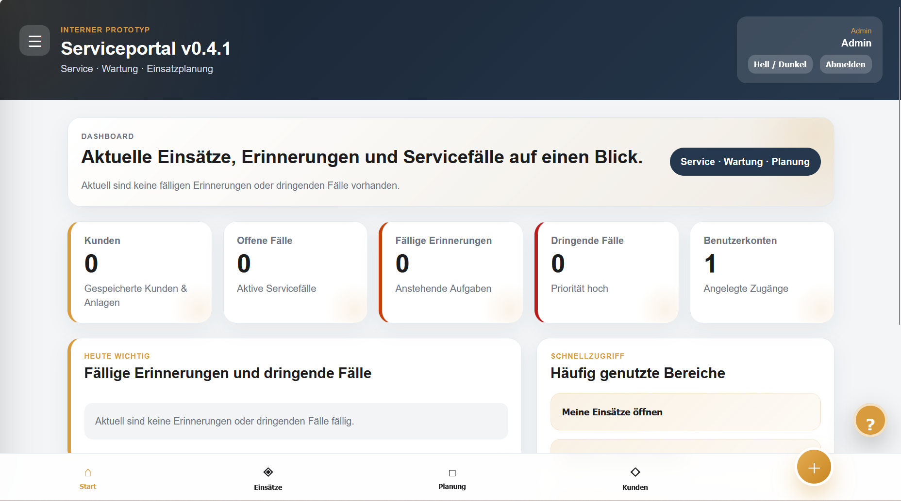

06Einblick
Serviceportal
Kategorie: Konzepte · Einblicke
Ein strukturiertes Serviceportal für Kundenfälle, Erinnerungen, Fälligkeiten und interne Abläufe.
Der Fokus liegt auf Übersicht, Priorisierung und nachvollziehbarer Bearbeitung.
FokusServicefälle, Struktur, Abläufe
Techniknicht öffentlich verlinkt
Screenshot verfügbar